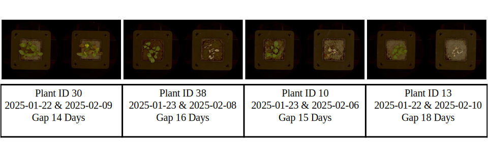

Experimental Setup
Representative temporal pairs sampled from the dataset. Each pair illustrates early-stage input and future-state target separated by 14–19 days. Samples span multiple plant IDs and treatment conditions to ensure variability and generalization.